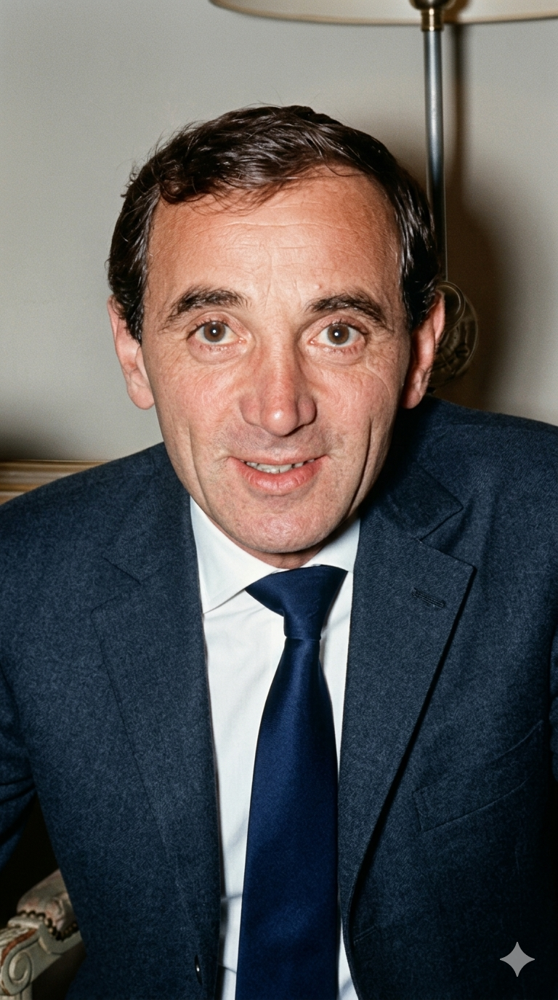

שארל אזנבור
Charles Aznavour
אטימולוגיה ומקור השם המלא
שם פרטי (במקור): שאהנור (Shahnour)
מקור ארמני. מורכב מהמילה "Shah" (מלך או אצילי - מושג השאול מפרסית) ו-"Nour" (אור). המשמעות היא "אור מלכותי" או "אור האצולה". שם זה שונה מאוחר יותר על ידי אחות בבית החולים הצרפתי שלא הצליחה להגות אותו, ולכן רשמה אותו כ"שארל" (Charles).
שם אמצעי: ואגינאג (Vaghinag)
מקור ארמני מסורתי עתיק. מסמל "מגן", "שריון" או לעיתים "אלון". זהו שם הניתן מתוך רצון להעניק חוסן והגנה לרך הנולד מפני תלאות העולם.
שם משפחה: אזנבוריאן (Aznavourian)
מקור ארמני מובהק. הסיומת "-יאן" (-ian) משמעותה "הבן של" או "ממשפחת". השורש "Aznavour" נגזר מהמילה הארמנית העתיקה שפירושה "אציל", "ענק" או "גיבור". יחד: "הבן של האציל". קוצר על ידו לאזנבור לנוחות הביטוי וההשתלבות בתרבות בצרפת.
ילדות
אזנבור נולד בפריז למהגרים ארמנים, מישה וקנאר, שנמלטו מרצח העם הארמני בטורקיה וחיכו בצרפת לוויזה לארצות הברית (שמעולם לא הגיעה). הוא גדל באווירה בוהמיינית ומוזיקלית, כשאביו היה זמר במקור ואמו שחקנית תיאטרון. למרות העוני, הבית היה מלא תמיד בשירה, תיאטרון ואמנים גולים. הוא נשר מבית הספר כבר בגיל 9 כדי להתחיל להופיע כילד-שחקן בתיאטרון ולעזור בפרנסה, מה שעיצב את יכולת ההגשה הדרמטית והייחודית שלו בהמשך כזמר. בתקופת מלחמת העולם השנייה, משפחתו הסתירה יהודים ואנשי מחתרת בדירתם הקטנה בפריז.
אידאולוגיה והישגים
משורר האהבה והבוהמה: אזנבור כונה "פרנק סינטרה הצרפתי". האידאולוגיה האמנותית שלו הייתה כתיבה נוקבת וכנה על נושאים שהיו לעיתים בגדר טאבו (אהבה נכזבת, התבגרות, הומוסקסואליות, וחיים בוהמייניים). קולו המחוספס והמיוחד, שלווה בביצועים דרמטיים, הפך לסמלו המסחרי.
הישגים בלתי נתפסים: במהלך קריירה שנמשכה מעל 80 שנה, אזנבור כתב והלחין כ-1,200 שירים, הוקלט בשמונה שפות שונות (כולל אנגלית, איטלקית וספרדית), ומכר למעלה מ-180 מיליון תקליטים ברחבי העולם. בשנת 1998 זכה בתואר "בדרן המאה" של CNN וטיים מגזין, כשהוא עוקף שמות כמו אלביס פרסלי ובוב דילן.
שגריר הומניטרי: מעבר למוזיקה, הייתה לו מחויבות עמוקה לשורשיו. הוא תרם תרומה פוליטית והומניטרית עצומה לארמניה (במיוחד לאחר רעידת האדמה הגדולה שם), ומונה לשגריר ארמניה בשווייץ ונציג קבוע באו"ם מטעם המדינה.